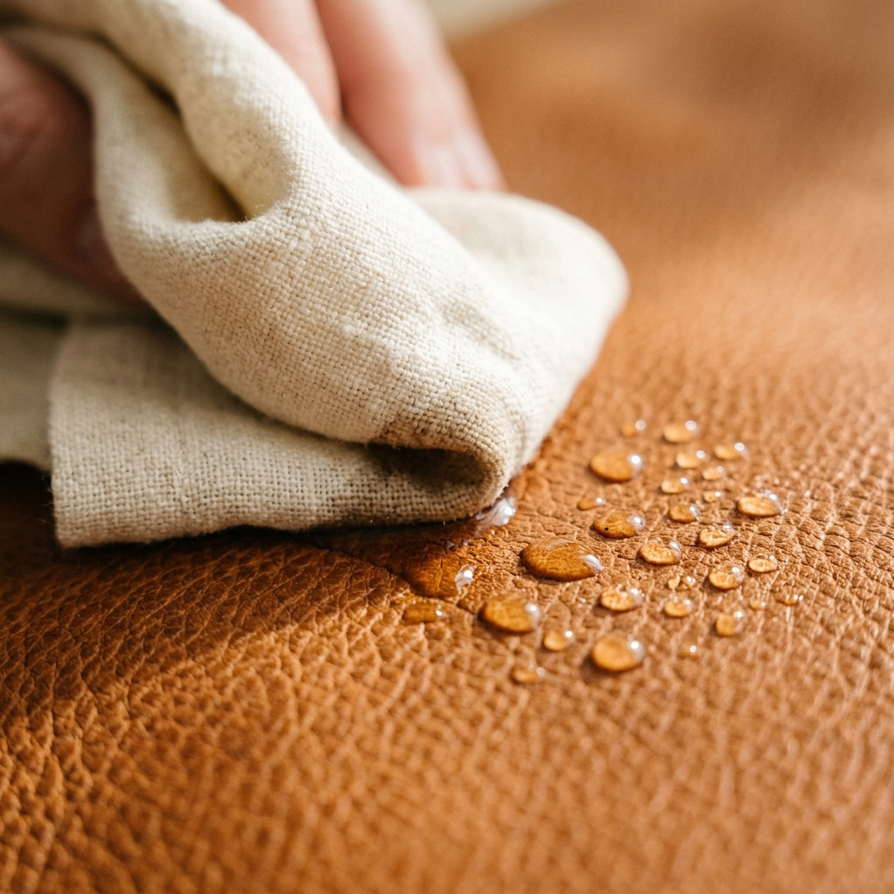
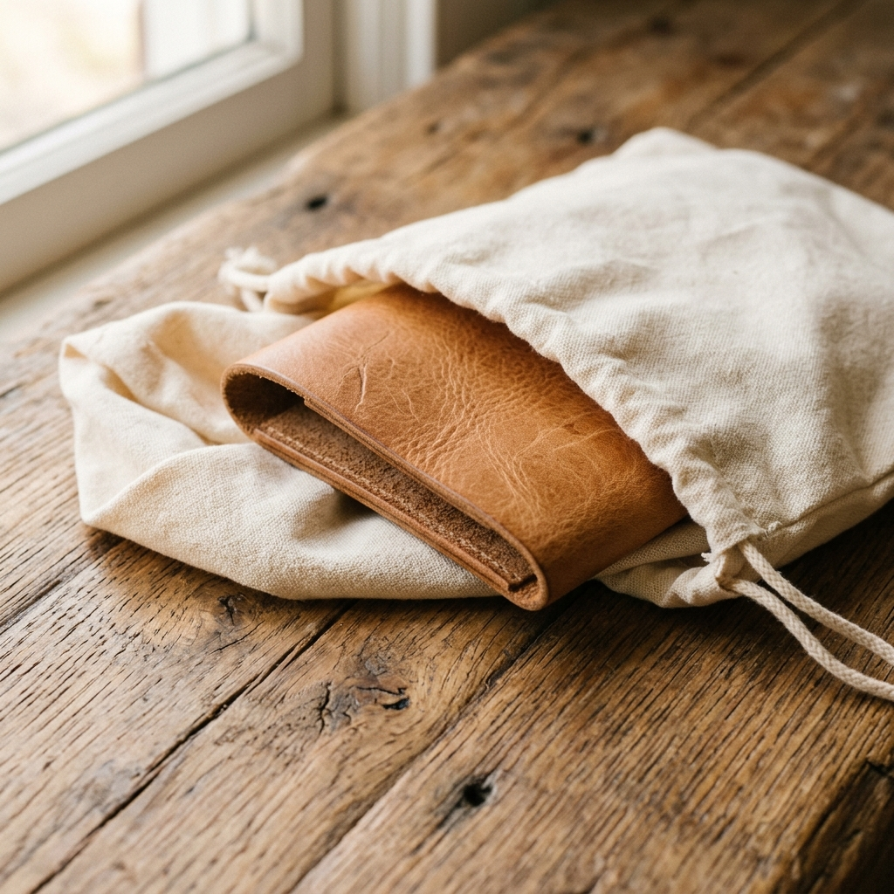
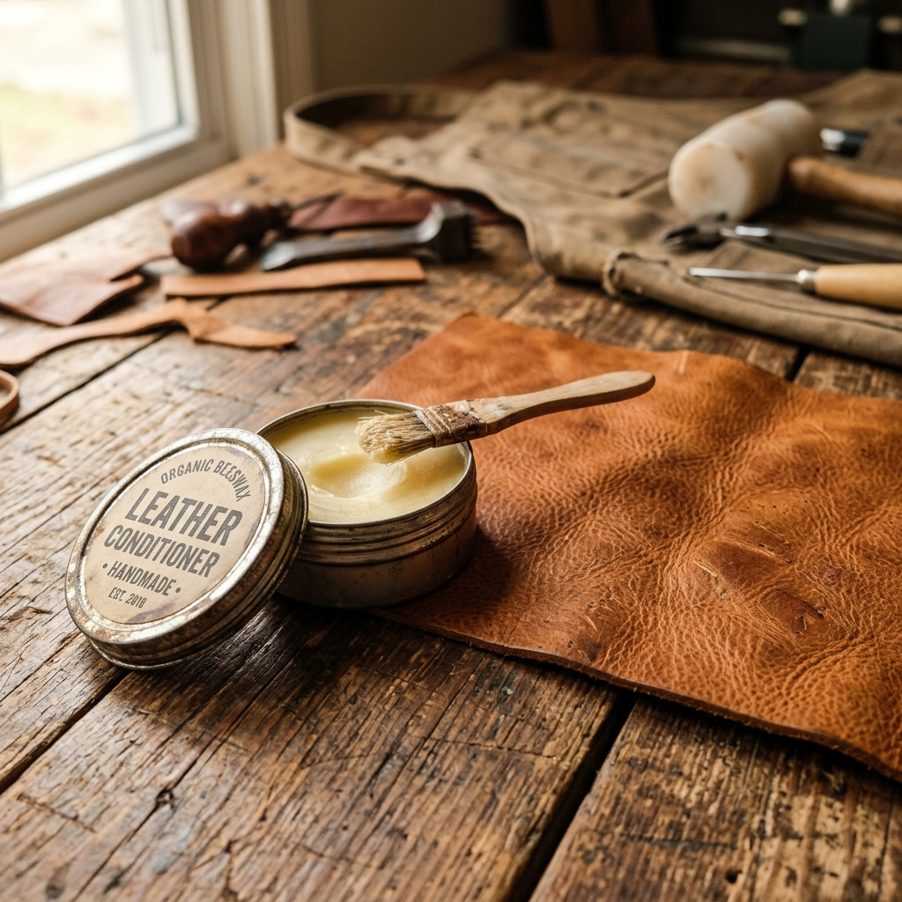

At source
Full-grain leather is not meant to be preserved under glass. We shape it by hand in our workshop using hides finished at our 35-year-old tannery, so it can live with you. It will soften where you hold it, shaped by your daily habits, and gather a rich patina that tells the story of everywhere you've been.

Water draws out the natural oils finished in the hide at source. If your piece gets wet, wipe it immediately with a soft cloth and let it air-dry naturally. Keep it away from direct heat source.

Leather needs air to keep its natural structure balanced. Avoid storing your bags or jackets in airtight plastic covers. Use the cotton dust bags we provide to let the grain breathe.

We finish our full-grain leather to outlast the seasons. Every six months, apply a thin coat of natural organic wax conditioner. It will soften the surface and help the patina grow.
A mark is not a defect; it is a sign that your leather is living. For light fingernail marks, simply rub the surface firmly with your thumb. The warmth and natural oils from your hand will distribute the wax and soften the mark back into the grain.
Do not panic, and do not use a hairdryer. Blot the water immediately with a clean dry cloth. Hang your garment or place your bag in a cool, ventilated room. Allow it to air-dry naturally before applying conditioner.
Wipe the surface weekly with a dry, lint-free cloth to remove surface dust. For deeper clean, use a damp cloth with mild vegetable glycerin soap. Always test a small spot first, and let it dry completely.